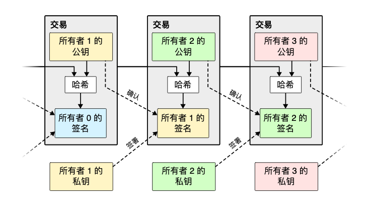
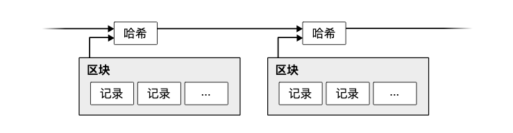
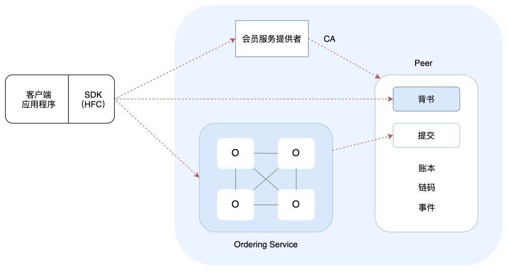
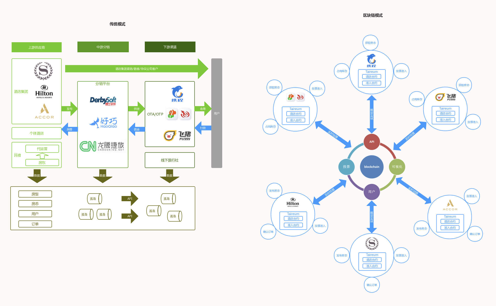

- 00 开篇词 掌握软件开发技术的第一性原理.md
- 01 程序运行原理：程序是如何运行又是如何崩溃的？.md
- 02 数据结构原理：Hash表的时间复杂度为什么是O(1)？.md
- 03 Java虚拟机原理：JVM为什么被称为机器（machine）？.md
- 04 网络编程原理：一个字符的互联网之旅.md
- 05 文件系统原理：如何用1分钟遍历一个100TB的文件？.md
- 06 数据库原理：为什么PrepareStatement性能更好更安全？.md
- 07 答疑 Java Web程序的运行时环境到底是怎样的？.md
- 07 编程语言原理：面向对象编程是编程的终极形态吗？.md
- 08 软件设计的方法论：软件为什么要建模？.md
- 09 软件设计实践：如何使用UML完成一个设计文档？.md
- 10 软件设计的目的：糟糕的程序员比优秀的程序员差在哪里？.md
- 11 软件设计的开闭原则：如何不修改代码却能实现需求变更？.md
- 12 软件设计的依赖倒置原则：如何不依赖代码却可以复用它的功能？.md
- 13 软件设计的里氏替换原则：正方形可以继承长方形吗？.md
- 14 软件设计的单一职责原则：为什么说一个类文件打开最好不要超过一屏？.md
- 15 软件设计的接口隔离原则：如何对类的调用者隐藏类的公有方法？.md
- 16 设计模式基础：不会灵活应用设计模式，你就没有掌握面向对象编程.md
- 17 设计模式应用：编程框架中的设计模式.md
- 18 反应式编程框架设计：如何使程序调用不阻塞等待，立即响应？.md
- 19 组件设计原则：组件的边界在哪里？.md
- 20 答疑 对于设计模式而言，场景到底有多重要？.md
- 20 领域驱动设计：35岁的程序员应该写什么样的代码？.md
- 21 分布式架构：如何应对高并发的用户请求.md
- 22 缓存架构：如何减少不必要的计算？.md
- 23 异步架构：如何避免互相依赖的系统间耦合？.md
- 24 负载均衡架构：如何用10行代码实现一个负载均衡服务？.md
- 25 数据存储架构：如何改善系统的数据存储能力？.md
- 26 搜索引擎架构：如何瞬间完成海量数据检索？.md
- 27 微服务架构：微服务究竟是灵丹还是毒药？.md
- 28 高性能架构：除了代码，你还可以在哪些地方优化性能？.md
- 29 高可用架构：我们为什么感觉不到淘宝应用升级时的停机？.md
- 30 安全性架构：为什么说用户密码泄漏是程序员的锅？.md
- 31 大数据架构：大数据技术架构的思想和原理是什么？.md
- 32 AI与物联网架构：从智能引擎到物联网平台.md
- 33 区块链技术架构：区块链到底能做什么？.md
- 33 答疑 互联网需要解决的技术问题是什么？.md
- 34 技术修炼之道：同样工作十几年，为什么有的人成为大厂架构师，有的人失业？.md
- 35 技术进阶之道：你和这个星球最顶级的程序员差几个等级？.md
- 36 技术落地之道：你真的知道自己要解决的问题是什么吗？.md
- 37 技术沟通之道：如何解决问题？.md
- 38 技术管理之道：你真的要转管理吗？.md
- 38 答疑 工作中的交往和沟通，都有哪些小技巧呢？.md
- 加餐 软件设计文档示例模板.md
- 结束语 期待未来的你，成为优秀的软件架构师.md
33 区块链技术架构：区块链到底能做什么？
在我的职业生涯中，我经历过各种各样的技术创新，见识过各种技术狂热的风潮，也看过各种技术挫折，但从来没有一种技术能像区块链技术这样跌宕起伏，具有戏剧性，吸引了各色人等。
区块链为什么能吸引这么多的关注？它到底能做什么？它的技术原理是什么？又为何如此曲折？
让我们从区块链的起源——比特币说起。
比特币与区块链原理
2008年11月，由中本聪设计、开发的比特币正式上线运行。我们现在都知道，比特币是一种加密数字货币。价格最高的时候，每个比特币可兑换近两万美金。一个看不见、摸不着的数字货币为什么能得到这么多的拥护，被炒到这么高的价格？
让我们继续追溯到传统的货币发行与交易系统。
传统的货币，也就是我们日常使用的钞票，是由各个国家的中央银行发行的。中央银行根据市场需求决定投放的货币数量，但是很多时候为了刺激经济发展，中央银行通常会额外多投放一些货币，这样就会出现钱越来越不值钱的情况，即通货膨胀。甚至有的时候，某些政府为了弥补自己的债务，恶意超发货币，有的国家甚至发行过面额为50万亿的钞票，导致了恶性通货膨胀。
于是就有人想，能不能发行一种数量有限、不会膨胀的数字货币，通过互联网在全球范围内使用呢？其实发行数字货币容易，但是得到大家的认可很难，而且货币在使用的时候，如何进行交易记账是个大问题。
传统上如果通过互联网进行交易转账，必须通过银行或者支付宝这样的第三方进行交易记账。但是通过互联网发行的数字货币必然得不到法定货币的地位，也就不会被银行等官方机构认可。如果没有受信任的官方机构记账，又如何完成交易呢？
所以比特币数字货币首先要解决的问题就是交易记账。比特币的主要思路是，构建一个无中心、去信任的分布式记账系统。这个记账系统和传统的银行记账不同，银行的账本由银行自己管理，银行是记账的中心，而比特币则允许任何人参与记账，没有中心，完全分布式的。
此外，传统的银行中心记账必须有个前提，就是交易者都相信银行，信任银行不会伪造、篡改交易。但是任何人都可以参与记账的比特币不可能得到大家的信任，所以这个记账系统必须从设计上实现去信任，也就是不需要信任记账者的身份，却可以信任这个人记的账。
这些不合常理，听起来就难度重重的要求，正是通过区块链技术实现的。
交易
首先，在比特币的交易系统中，所有交易的参与者都有一个钱包地址，事实上，这个钱包地址正是非对称加密算法中的公钥。非对称加密算法我在第30篇，安全性架构一篇讲过。进行交易的时候，交易的发起者需要将要交易的数字货币（一个hash值）和交易的接受方用自己的钱包私钥进行签名。
记账者可以使用发起者的公钥对签名进行验证，保证交易是真正发起者提交的，而不是其他人伪造的交易。
如下图：

区块链
交易签名只能保证交易不是他人伪造的，却不能阻止交易的发起者自己进行多重交易，即交易的发起者将一个比特币同时转账给两个人，也就是所谓的双花。
比特币的解决方案是，记账者在收到若干交易后，会将这些交易打包在一起，形成一个区块（block）。区块必须严格按照顺序产生，因此最新一个区块的记账者可以根据区块顺序得到此前所有的区块。这样，记账者就可以检查所有区块中的交易数据，是否有双花发生。
至于如何保证区块的严格顺序，比特币的做法是，在每个区块的头部记录他的前一个区块，也就是前驱区块的hash值，这样所有的区块就构成了一个链。我们知道，单向链表是有严格顺序的。
通过hash值链起来的区块就是所谓的区块链，如下图：

工作量证明
区块链的严格顺序不但可以避免双花，还可使历史交易难以被篡改。如果有记账者试图修改一笔过去区块中记录的交易，必然需要改变这个交易所在区块的hash值，这样就会导致下一个区块头部记录的前驱区块hash值和它不匹配，区块链就断掉了。
为了不让区块链断裂，篡改交易的记账者还必须要修改下一个区块的前驱hash值，而每个区块的hash值是根据所有交易信息和区块头部的其他信息（包括记录的前驱区块hash值）计算出来的。下一个区块记录的前驱hash值改变，必然导致下一个区块的hash需要重算。以此类推，也就是需要重算从篡改交易起的所有区块hash值。
重算所有区块的hash值虽然麻烦，但如果篡改交易能获得巨大的收益，就一定会有人去干。我前面说过，区块链是去信任的，即不需要信任记账者，却可以相信他记的账。因此，区块链必须在设计上保证记账者几乎无法重算出所有区块的hash值。
比特币的解决方案就是工作量证明，比特币要求计算出来的区块hash值必须具有一定的难度，比如hash值的前几位必须是0。具体做法是在区块头部引入一个随机数nonce值，记账者通过修改这个nonce值，不断碰撞计算区块hash值，直到算出的hash值满足难度要求。
因此，计算hash值不但需要大量的计算资源，GPU或者专用的芯片，还需要大量的电力支撑这样大规模的计算，在比特币最火爆的时候，计算hash值需要消耗的电量大约相当于一个中等规模的国家消耗的电量。
在这样的资源消耗要求下，重算所有区块的hash值几乎是不可能的，因此，比特币历史交易难以被篡改。这里用了“几乎”这个词，是因为如果有人控制了比特币超过半数的计算资源，确实可以进行交易篡改，即所谓的51%攻击。但是这种攻击将会导致比特币崩溃，而能控制这么多计算资源的记账者一定是比特币主要的受益者，他没有必要攻击自己。
矿工
前面讲到，比特币的交易通过区块链进行记账，而记账需要花费巨大的计算资源和电力，那为什么还有人愿意投入这么多资源去为比特币记账呢？
事实上，比特币系统为每个计算出区块hash的记账者赠送一定数量的比特币。这个赠送不是交易，而是凭空从系统中产生的，这其实就是比特币的发行机制。记账者为了得到这些比特币，愿意投入资源计算区块hash值。
由于计算出hash就可以得到比特币，计算hash值的过程也被形象地称作“挖矿”，相对应的，进行hash计算的记账者被称作矿工，而用来计算hash值的机器被称作矿机。
当“矿工们”为了争夺比特币，争相加入“挖矿”大军时，比特币区块链就变成一个分布式账本了。这里的分布式有两层含义：“矿工”记账时需要进行交易检查，所以需要记录从第一个区块开始的、完整的区块链，也就是说，完整的账本分布在所有的矿工的机器上；此外，每个区块是由不同矿工挖出来的，也就是说，每次交易的记账权也是分布的。
比特币虽然取得巨大的成功，但一直没有得到主流国家的官方支持。但是比特币使用的区块链技术却得到越来越多的认可，在企业甚至政府部门间的合作领域里，得到了越来越多的应用。
联盟链与区块链的企业级应用
比特币应用的区块链场景也叫做公链，因为这个区块链对所有人都是公开的。除此之外，还有一种区块链应用场景，被称作联盟链。
联盟链是由多个组织共同发起，只有组织成员才能访问的区块链，因此有时候也被称作许可型区块链。传统上，交易必须依赖一个中心进行，不同的组织之间进行交易，必须依赖银行这个中心进行转账。那么银行之间如何进行转账呢？没错，也需要依赖一个中心，国内的银行间进行转账，必须通过中国人民银行清算中心。
跨国的银行间进行转账则必须依赖一个国际的清算中心，这个中心既是跨国转账的瓶颈，又拿走了转账手续费的大头。所以当区块链技术出现以后，因为区块链的一个特点是去中心，各家银行就在想：银行之间能不能用区块链记账，而不需要这个清算中心呢？最初的联盟链技术就是由银行推动发展的。
目前比较知名的联盟链技术是IBM主导的Hyperledger Fabric。主要架构如下：

Peer节点负责对交易进行背书签名，Ordering节点负责打包区块，Peer节点会从Ordering节点同步数据，记录完整的区块链。而所有这些服务器节点的角色、权限都需要CA节点进行认证，只有经过授权的服务器才能加入区块链。
最近两年，随着区块链技术的火爆，联盟链技术也开始从银行扩展到互联网金融领域，甚至非金融领域。2018年支付宝香港和菲律宾一家互联网金融企业通过区块链进行了跨国转账，而香港和菲律宾的外汇管理局也作为联盟成员加入了区块链，使得转账和监管在同一个系统中完成。
在互联网OTA（在线旅行代理）领域，酒店房间在线销售是一块非常大的业务，但是一家酒店不可能对接所有的OTA网站，而一家OTA网站也不可能获得所有的酒店资源，于是就催生了第三方的酒店分销平台，这个平台负责对接所有的酒店，酒店房间通过该平台对外分销，而OTA网站通过该平台查找酒店房间以及预定房间。
于是这个平台就成为一个全行业不得不依赖的中心，一方面产生了巨大的瓶颈风险，另一方面酒店和OTA也不得不给这个中心支付高昂的手续费。
事实上，我们可以利用联盟链技术，将酒店和OTA企业通过区块链技术关联起来，酒店通过区块链发布房间信息，而OTA通过区块链查找房间信息以及预订房间。如下图所示，左边是传统的酒店分销模式，右边是基于区块链的酒店分销模式。

上面讲到的Hyperledger 联盟链技术部署和应用都比较复杂。目前在区块链领域，社区资源比较丰富，更为易用，也更被广泛接受的区块链技术是以太坊。但是以太坊是一个公链技术，不符合联盟链受许可才能加入的要求，因此，我和一些小伙伴对以太坊进行了重构，使其符合联盟链的技术要求，你可以点击源码地址看一下，也可以看看相关文档。
如果你感兴趣的话，欢迎你参与开发与应用落地。
小结
应该说，区块链能吸引到这么多的关注，产生这么大影响，和加密数字货币的炒作是分不开的。正因为数字货币的炒作，才使得区块链技术吸引了大量的资源，更多的人才投入研发区块链相关技术，区块链技术进步与应用也吸引了大量的关注。
但是数字货币的投机属性又使得人们对区块链技术抱有急功近利的想法，希望区块链技术能快速带来回报。
在我看来，互联网技术的快速发展是生产力革命，使得生产力数以十倍、百倍的增加。而区块链技术是生产关系革命，传统上，所有的交易和合作都必须依赖法律以及信任。而法律的成本非常高，很多场合无法支撑起用法律背书的成本；而跨组织，特别是互为竞争对手的组织之间又不可能产生信任。区块链的出现，使得低成本，去信任的跨组织合作成为可能，将重构组织间的关系，这个关系既包括企业间的关系，也包括政府和企业间的关系，还有政府部门间的关系。
互联网使得这个世界变得更加扁平，信息流动更加快速，但无法弥合这个世界割裂的各种关系，而区块链可以打通各种关系，将这个世界更加紧密联系在一起，使全人类成为真正的命运共同体。
思考题
今天我讲了一下区块链技术，它虽然火爆，但仍然处在发展之中。你能想到的利用区块链技术的场景有哪些呢？
欢迎你在评论区写下你的思考，也欢迎把这篇文章分享给你的朋友或者同事，一起交流一下。
© 2019 - 2023 Liangliang Lee. Powered by Vert.x and hexo-theme-book.